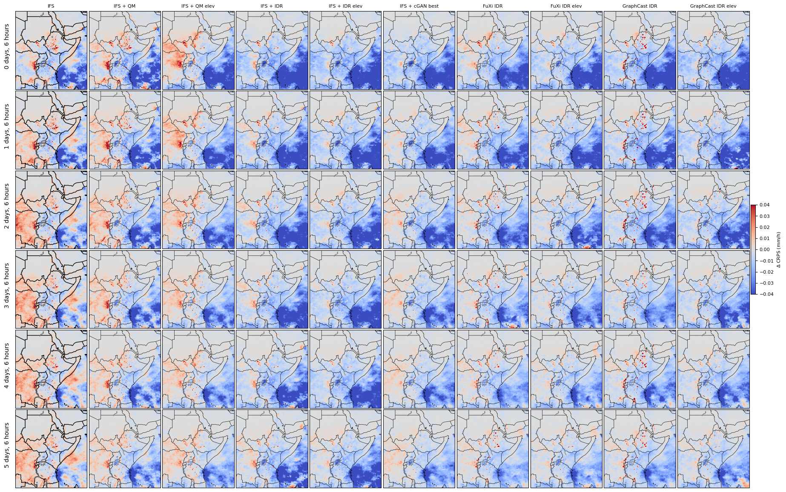
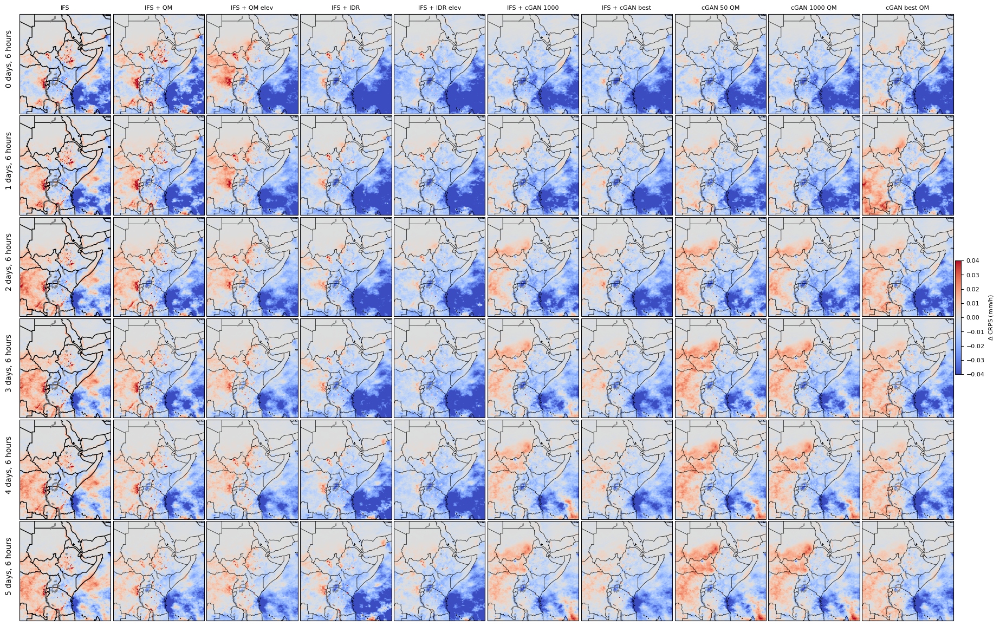

CRPS comparison | Categories of reliability | Cost-loss ratios
The CRPS difference between some models and the IMERG climatology. Blue means that the model has a lower (better) CRPS. Red means that IMERG has a lower (better) CRPS.

